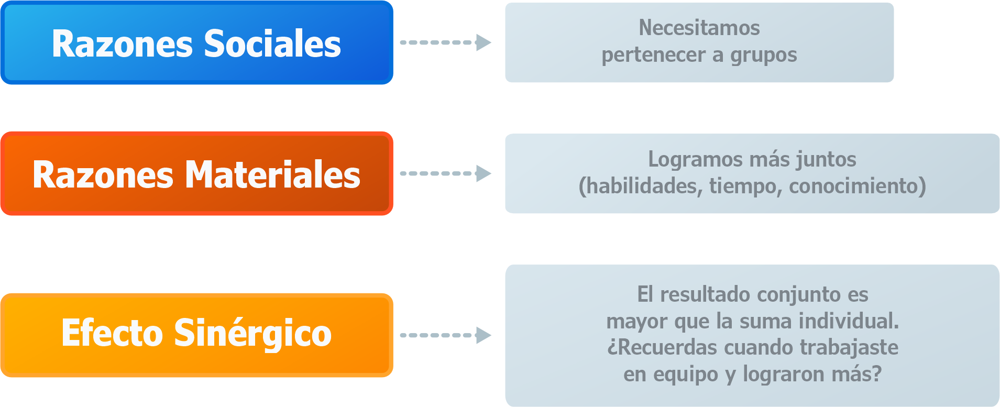
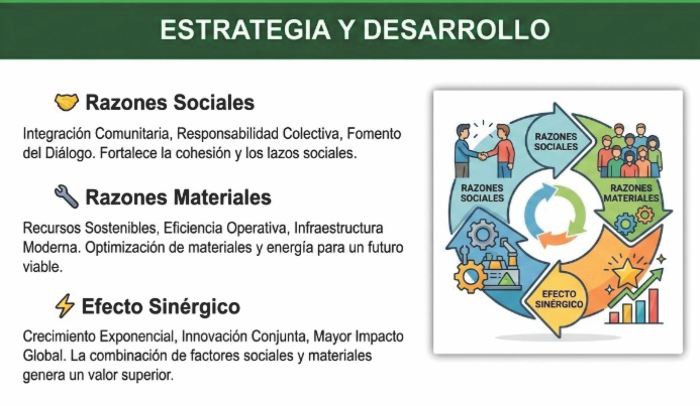
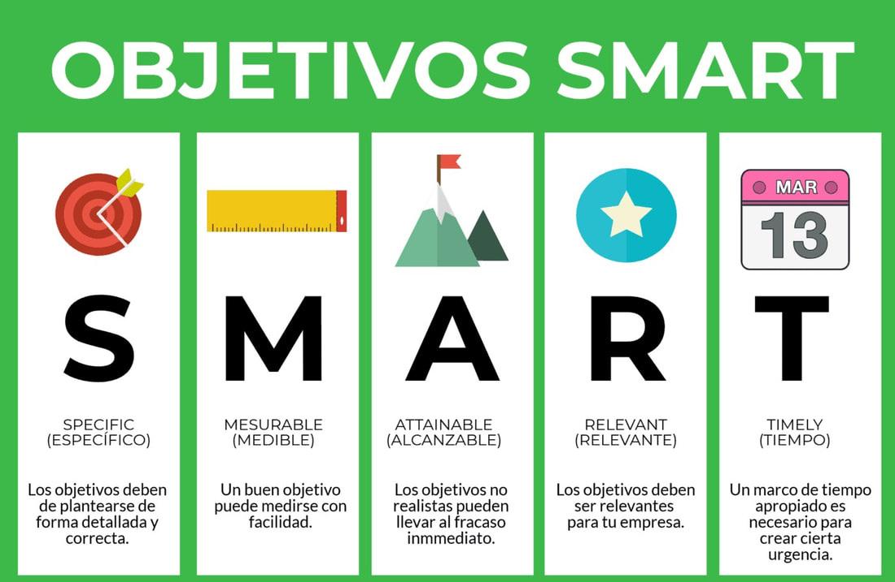

Las organizaciones surgen porque el ser humano
solo no puede satisfacer todas sus necesidades.
Tres razones explican su existencia:


¿Qué diferencia a una empresa como Postobón de
un grupo de amigos que se organiza para reciclar?
La respuesta está en la formalidad.
Explora las diferencias entre organizaciones formales e informales,
y descubre por qué no todas las organizaciones buscan ganar dinero.
Haz clic en cada pestaña de la aplicación y explora el tipo de organizaciones.
Las empresas no son organizaciones cualquiera. Tienen 6 características únicas que las definen:
Generan ganancias, asumen riesgos, tienen filosofía de negocios,
se evalúan contablemente, son reconocidas como negocios
y constituyen propiedad privada.
Haz clic en cada característica para explorarla en profundidad.

Los objetivos son la razón de ser de las empresas. Cumplen 4 funciones clave:
Orientan, legitiman, miden y evalúan. Para formularlos correctamente usamos SMART:
Específico, Medible, Alcanzable, Relevante y con Tiempo definido.
¿Puedes formular un objetivo SMART para una empresa de tu ciudad?
Una empresa no existe sola: toma recursos del entorno (inputs), los transforma (procesamiento)
y devuelve productos/servicios (outputs). Luego recibe retroalimentación del mercado.
Este ciclo hace a las empresas 'sistemas abiertos'.
Cuando las ventas caen,
¿Qué tipo de retroalimentación recibe la empresa?
Explora el diagrama y descúbrelo.
Toda empresa necesita saber QUÉ ES HOY (misión) y QUÉ QUIERE SER MAÑANA (visión).
Además, para funcionar necesita 5 tipos de recursos: físicos, financieros, humanos, mercadológicos
y administrativos. Sin recursos no hay objetivos posibles.
¿Cuál crees que es el recurso más importante? ¿El dinero o las personas?